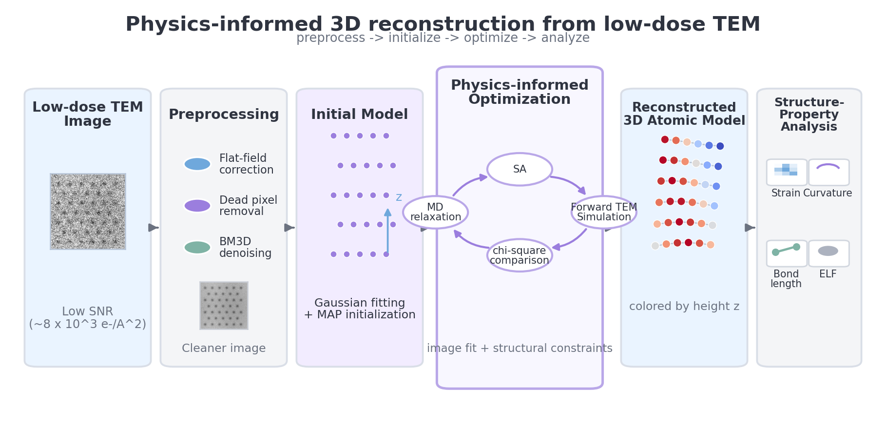
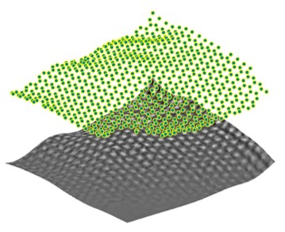

Computational Imaging Scientist
I build physics-informed reconstruction algorithms for noisy imaging data — recovering structure from measurements where signal is scarce and the physics matters.
About
I am a computational scientist trained at the intersection of experimental imaging, inverse problems, and algorithm development. My PhD work focuses on a genuinely hard problem: inferring 3D atomic coordinates from a single 2D projection taken at extremely low electron dose.
The core challenge is not just noise — it is that the problem is fundamentally ill-posed. Multiple 3D configurations project to the same 2D image. My approach addresses this by encoding physical constraints directly into the optimization: molecular dynamics regularization forces solutions to remain on the interatomic potential energy surface, while simulated annealing enables global search without requiring gradients of the forward model.
I translate research methods into maintainable Python software — modular pipelines with structured handoffs, automated validation, and reproducible outputs. The same framework extends across imaging modalities, from electron microscopy to accelerated MRI.
Featured Research
Flagship PhD project at City University of Hong Kong, in collaboration with Prof. Angus Kirkland (University of Oxford). Reconstructs 3D atomic coordinates of free-standing graphene from individual TEM frames at 8×10³ e⁻/Ų and 1 ms temporal resolution.

Reconstructing 3D atomic coordinates from a single 2D low-dose TEM image is severely ill-posed: the forward model is many-to-one, SNR is below 3, and the loss landscape contains many local minima. The framework addresses all three challenges simultaneously through SA global optimization with MD-based hard constraints on physical admissibility.

χ² and z-RMSD across 4 SA outer iterations. 2.5× improvement over initialization.
| Method | Frames required | Temporal res. | z-accuracy | SNR regime |
|---|---|---|---|---|
| This work (SA+MD) | 1 | 1 ms | 0.45 Å | SNR < 3 |
| Segawa et al. 2021 | 15 | ~70 s | ±1.0 Å | Higher SNR |
| Li Songge et al. 2023 | 1 | ~1 ms | Comparable | Material-specific |
Projects
OPEN-SOURCE · PYTHON
Modular Python reimplementation of the full reconstruction pipeline. Replaces MATLAB and proprietary tools (Tempas, LAMMPS) with open-source equivalents (abTEM, ASE, matscipy).
DEMO · STREAMLIT · ONNX
Interactive demo applying the same physics-informed inverse-problem framework to MRI k-space reconstruction, demonstrating cross-modality transfer from TEM.
MRI Reconstruction
Shepp-Logan phantom, R=4 acceleration, random undersampling mask
| Method | SSIM | PSNR (dB) | Runtime | Framework |
|---|---|---|---|---|
| Zero-filled baseline | 0.38 | 22.5 | <1 ms | NumPy |
| FISTA (60 iter) | 0.55 | 32.5 | ~0.3 s | NumPy |
| Learned ISTA (8 unrolls) | 0.55 | 32.5 | ~0.1 s | NumPy |
Skills
Publication
Presents a SA+MD inverse solver with KL-divergence dose calibration achieving 0.45 Å out-of-plane accuracy at 1 ms temporal resolution. First quantitative structure–ELF polynomial mapping derived from experimentally reconstructed, dynamically evolving atomic configurations. Identifies critical dose threshold below which structural recovery is statistically impossible.
Contact
Based in Boston, MA. Available immediately. U.S. work authorization.